Atividades Extracurriculares
Além do PET, a Escola de Engenharia oferece diversas outras oportunidades extracurriculares para que os alunos de Engenharia Elétrica possam complementar o conhecimento adquirido em sala de aula e obter experiências que podem até mesmo ir além dos muros da universidade, em com competições e eventos. Conversamos com membros destes órgãos e vamos descrever com a palavra destes membros o papel de cada um deles.
Empresas Juniores
CPE Jr.
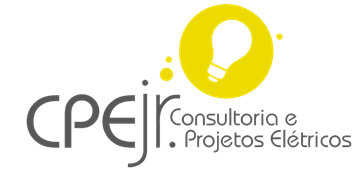Procurando prover uma experiência diferenciada de contato com o mercado e com o empreendedorismo ainda na faculdade, a CPE Jr. é uma empresa júnior formada por alunos dos cursos de Engenharia Elétrica, Controle e Automação e Sistemas da UFMG. Com a missão de formar pessoas transformadoras, a CPE Jr. atende o mercado com projetos elétricos, eletrônicos, de TI e automação. Ao longo da vivência na empresa, são desenvolvidas habilidades além do escritório de projetos, como gestão, estratégia, liderança, vendas, marketing, gestão de pessoas, dentre outras.
Mais informações:
Núcleo UFMG Jr.
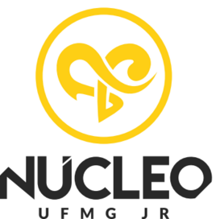O Núcleo UFMG Júnior é uma instância do MEJ - Movimento Empresa Junior - e tem a função de alinhar todas as Empresas Juniores da UFMG, desde eventos para promover a união das EJ’s de nossa universidade a preparar os conselhos das mesmas para as reuniões da FEJEMG - Federação de Empresas Juniores de Minas Gerais. Ainda, entre nossos eventos, estão ações solidárias (doação de sangue, arrecadação de alimentos e roupas) e eventos para promover o empreendedorismo em nosso meio (Sempre - Semana do Empreendedorismo e UaiFI!). Lembrando que todos os cargos do Núcleo são ocupados por membros das Empresas Juniores da UFMG.
Mais informações:
Movimento Estudantil
Grêmio de Estudantes de Engenharia Elétrica
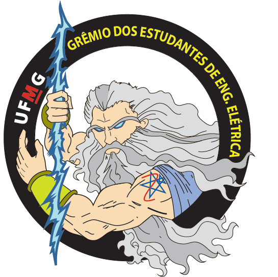O GEEE, ou G3E, é uma associação civil sem fins lucrativos e é a entidade estudantil representativa dos estudantes de Engenharia Elétrica da Escola de Engenharia da UFMG. Refundado no começo do século XXI, o GEEE acumula décadas de história no movimento estudantil da UFMG. Dentre suas atribuições estão nomear representantes discentes para os órgãos colegiados pertinentes, organizar e promover eventos culturais e acadêmicos que sejam de interesse para seus membros, servir de porta-voz para qualquer demanda de seus membros perante a UFMG e promover a integração entre todos os alunos do curso.
Mais informações:
Diretório Acadêmico da Escola de Engenharia
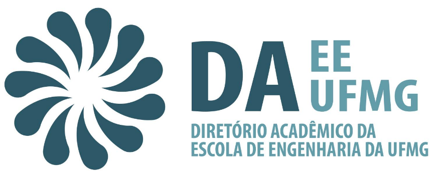Fundado em 11 de dezembro de 1914, o Diretório Acadêmico da Escola de Engenharia da UFMG é a instituição máxima de representação dos alunos de engenharia dentro da Universidade. O DA tem por principais finalidades representar os estudantes da EEUFMG, patrocinar interesses do corpo discente e designar a representação dentro dos órgãos de deliberação da Escola, como os Colegiados, as Câmaras Departamentais e a Congregação. São atribuições do DA defender os interesses dos estudantes, preservar as tradições estudantis, contribuir para o prestígio da Escola de Engenharia da UFMG e representar o pensamento dos membros.
Mais informações:
Associações
Coral da Escola de Engenharia
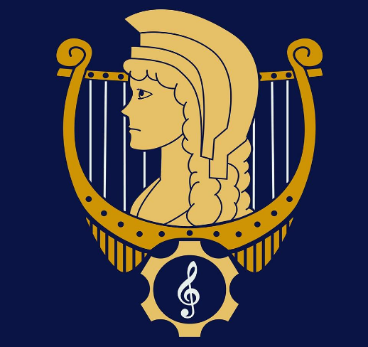O Coral da Escola de Engenharia, que nasceu de uma em parceria com o Núcleo de Música Coral da UFMG, tem como objetivo a promoção de projetos culturais no âmbito do canto. Qualquer aluno ou funcionário da EEUFMG pode participar. O Coral conta com aulas de professores e alunos da Escola de Música da UFMG. Dessa forma, não é obrigatório ter experiência em canto para participar do projeto, mas ela será considerada um diferencial, caso exista.
Mais informações:
Associação Atlética Acadêmica da Escola de Engenharia
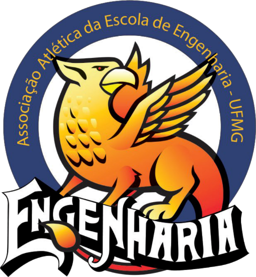A Associação Atlética da Escola de Engenharia da UFMG foi fundada em 1949 e consolida-se hoje como a maior Atlética de Minas Gerais. No esportivo, a AAAEE organiza campeonatos no âmbito interno da UFMG, estaduais e regionais, entre eles IntraENG, Inter UFMG, Calouríadas, Champions (Futsal), Mundial de Clubes (Futsal), TREM e, a maior delas, Engenharadas Mineiro. Atualmente, a Atlética conta com equipes das seguintes modalidades: Basquete, Futsal, Handebol, Vôlei, Atletismo, Natação, Tênis de Mesa, Tênis, Peteca, Xadrez, Judô, Jiu Jitsu, Futebol, Cheerleading, Charanga e E-Sports.
Mais informações:
Bateria Engrenada
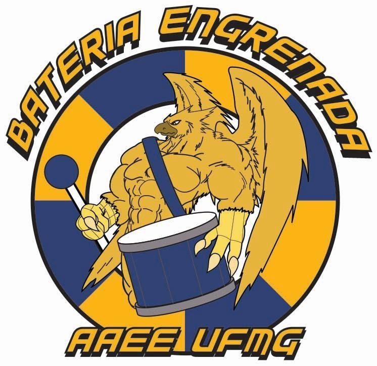Bateria universitária da Associação Atlética da Escola de Engenharia da UFMG, formada por estudantes da própria escola.
Mais informações:
Engenharia UFMG Cheer
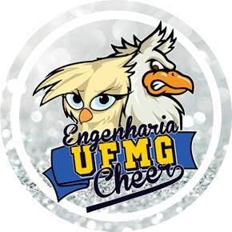A Engenharia UFMG Cheer é a primeira equipe de cheerleading da UFMG, pertencente à Associação Atlética da Escola de Engenharia.
Mais informações:
Engenharia Solidária
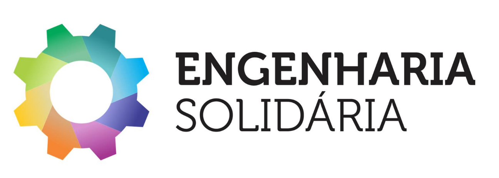A Engenharia Solidária é uma associação estudantil que tem como missão humanizar a Escola de Engenharia da UFMG e impactar positivamente a sociedade por meio de ações sociais que mobilizem a comunidade acadêmica. Atualmente, alguns dos projetos e ações realizadas pela Engenharia Solidária são: Gincana Solidária, Ação EJ, Semana da Solidariedade, Ação Jovem, Ação Educação, Ação de Natal e Troféu Solidário. Além dessas ações pontuais, a Engenharia Solidária realiza sempre visitas e entrega de doações a asilos, creches, abrigos, entre outras instituições beneficentes.
Mais informações:
Equipes de Competição
Uai, sô! fly!!!
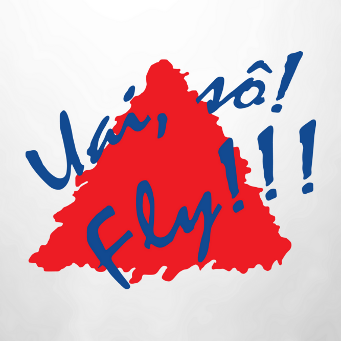Composta por estudantes de graduação em Engenharia da UFMG, a equipe Uai, Sô! Fly!!! participa anualmente da competição SAE Brasil Aerodesign, em São José dos Campos/SP. Nessa competição as equipes são desafiadas a projetar, construir e voar uma aeronave rádio controlada capaz de carregar a maior quantidade de carga. Aos vencedores é dada uma oportunidade de participar da SAE Aerodesign Internacional, nos Estados Unidos. A Uai, Sô! Fly!!! desenvolve seus projetos no Centro de Estudos Aeronáuticos (CEA) da UFMG, um grande galpão que possui equipamentos de alta tecnologia que permitem que a UFMG seja uma das únicas universidades no mundo capaz de desenvolver por completo uma aeronave em suas instalações, desde a concepção do projeto até a construção.
Mais informações:
Autobotz UFMG
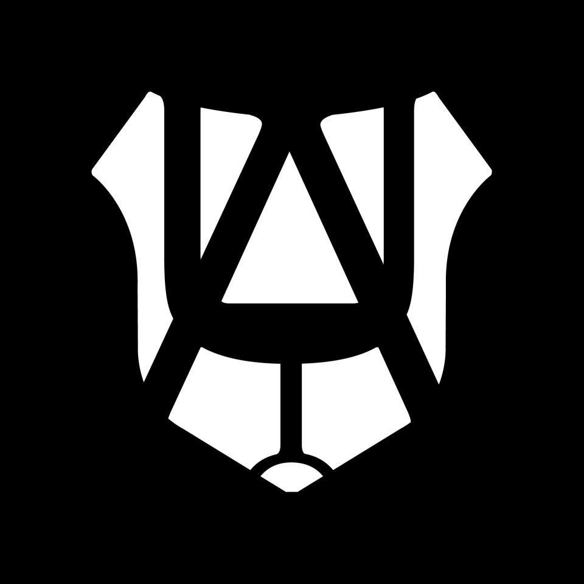Desenvolvimento e execução de projetos de pesquisa no âmbito da robótica autônoma, com ênfase no desenvolvimento de robôs a serem utilizados em competições de cunho nacional e internacional.
Mais informações:
Fórmula SAE UFMG
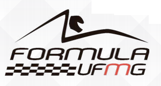O Fórmula SAE UFMG é é uma equipe de competição composta por estudantes de seis engenharias da UFMG, que participa anualmente da competição Fórmula SAE Brasil. A missão é projetar, fabricar e testar um carro de alto desempenho, proporcionando aos integrantes condições necessárias para a aplicação prática dos conhecimentos obtidos durante a graduação, representando a UFMG e o estado de Minas Gerais nas competições Fórmula SAE. O evento desafia então os estudantes de engenharia a projetar um veículo tipo fórmula que, durante três dias, cerca de 40 carros passam por provas estáticas e dinâmicas que avaliam tanto o projeto quanto o protótipo. Dessa forma, vence a competição o melhor projeto de engenharia.
Mais informações:
Fórmula Tesla UFMG
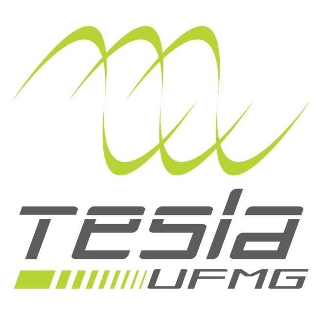A equipe Fórmula Tesla UFMG desenvolve tecnologia automotiva focada em veículos puramente elétricos, que é aplicada em testes de campo na categoria Fórmula SAE. O intuito primordial é o aprendizado dos envolvidos, visando também demonstrar avançada tecnologia nacional para que o investimento no setor aumente substancialmente. Além de todos os subsistemas automotivos de alto desempenho envolvidos, há o destaque para o projeto de um diferencial eletrônico no acionamento de dupla tração traseira independente. Vale pontuar acelerados projetos e acordos de patrocínio bem-sucedidos. É um projeto inovador que busca aliar conhecimento, desenvolvimento e prática.
Mais informações:
Baja UFMG
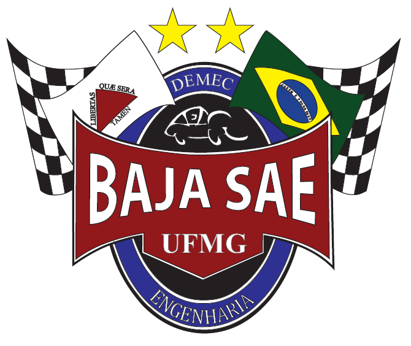O Baja UFMG é uma equipe composta exclusivamente por estudantes de engenharia, que projeta veículos protótipos off-road, monopostos para serem avaliados em competições organizadas pela SAE - Sociedade dos Engenheiros da Mobilidade. O intuito do projeto é participar das competições BAJA SAE regional, nacional e internacional, além de permitir a expansão do conhecimento adquirido em sala de aula e promover convivência com ferramentas de projeto utilizadas em indústrias. Os eventos reúnem, todos os anos, diversas equipes de estudantes e professores das principais escolas de engenharia do mundo e os veículos devem ser capazes de superar as mais adversas condições, respeitando as regras da competição.
Mais informações:
Milhagem UFMG
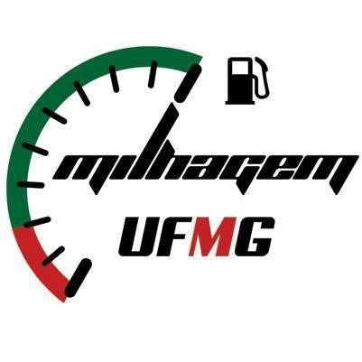A Equipe Milhagem UFMG é um projeto extracurricular, composto por alunos de graduação em Engenharia da UFMG. Nele, os estudantes aplicam o conhecimento obtido em sala de aula na construção de um protótipo de eficiência energética. Trata- se de um veículo, que é concebido desde o projeto das peças à sua fabricação, desenvolvendo e aplicando soluções inovadoras, visando a redução do consumo de combustível. A equipe disputa competições da categoria (até 2014, a Maratona Universitária de Eficiência Energética e, desde 2016, a Shell Eco Marathon) e é detentora do recorde nacional, obtido em 2006 com o protótipo CEA M2, registrando 598km/L. Atualmente ocupa o posto de vice-campeã brasileira.
Mais informações:
Projetos de Extensão
ENG200
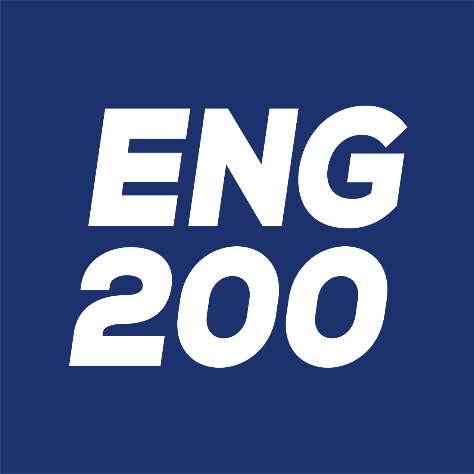Com o intuito de prover um ensino de excelência e condizente com os desafios do novo século, a Direção da Escola de Engenharia criou o Programa de Inovação na Educação em Engenharia ENG200, que visa melhorias que permitam o desenvolvimento profissional e pessoal ainda maior dos alunos que passam por ela. O ENG200 intenciona realizar diversas ações que buscam avanços curriculares, estruturais e também sociais, para fazer da formação em engenharia uma experiência cada vez mais prazerosa e sintonizada com o cotidiano. A renovação de uma Organização centenária e renomada pela qualidade do seu ensino é um dos exemplos do posicionamento visionário da Instituição e esse fato certamente justifica a atenção de potenciais parceiros.
Mais informações:
Selex
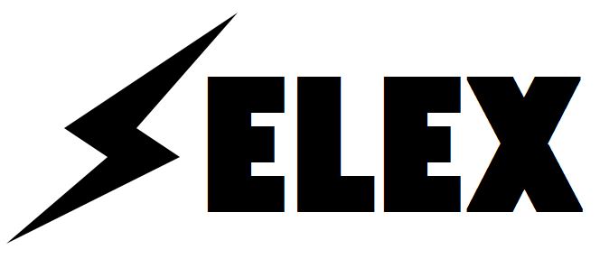O Sistemas Elétricos Experimentais (SELEX) é um projeto de extensão que promove, por um mês a cada semestre, encontros oficinas diversos, escolhidos em conjuntos pelos voluntários e participantes externos. Com isso, transforma visões de mundo e aprimora capacidades técnicas e humanas dos envolvidos. As oficinas visam troca de conhecimento e vivência ente jovens de diferentes contextos sociais. Isso ocorre por meio de aprendizado em eletrotécnica, informática, música, reutilização de materiais, grafitti, cerâmica, entre outros, assim como visitas a outros projetos.
Mais informações:
Equalizar
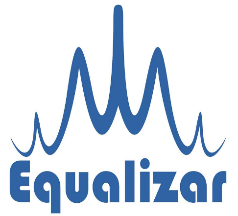O Equalizar é um Projeto de Extensão da UFMG que quer transformar a sociedade por meio da educação e do voluntariado. Formado por estudantes da universidade, o cursinho oferece gratuitamente cursos preparatórios para o ENEM, Vestibulares e para o Ensino Técnico a alunos das redes municipal e estadual de ensino da Grande BH. A grande missão é impactar positivamente a vida de jovens através de uma educação de qualidade, pautada no exemplo e no trabalho voluntário com o propósito de colaborar para a redução das desigualdades sociais e propiciar formas mais dignas de inclusão social através da criação de condições reais de ingresso ao Ensino Superior e Técnico de Qualidade.
Mais informações:
CIPMOI
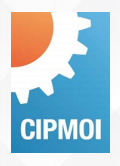O Curso Intensivo de Preparação de Mão de Obra Industrial (CIPIMOI) tem como principal objetivo oferecer aos operários das áreas da construção civil, elétrica e mecânica uma oportunidade de adquirirem noções teóricas dos serviços que realizam, criando a possibilidade de se sobressaírem no mercado de trabalho. Além disso, propõe-se a discutir a realidade sócio-política e os reflexos desta no dia a dia destes trabalhadores. Os alunos do projeto, além de terem aulas técnicas, têm aulas de matemática básica, informática e comunicação e relações humanas. Outro objetivo do programa é permitir que os estudantes da graduação da UFMG, com a função de instrutores, tenham a possibilidade de construir a experiência acadêmica através do intercâmbio entre os conhecimentos adquiridos na universidade e os adquiridos pela relação de aproximação com a prática profissional dos trabalhadores.
Mais informações: